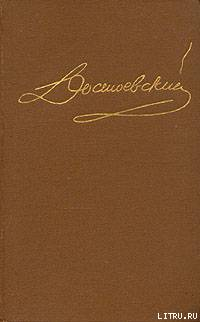

Фёдор Михайлович Достоевский
Бесы
Полное UntoldArchive.com: весь роман (3 части, 23 главы) и глава «У Тихона» на 24 страницах — с лентой чтения, закладками, темами «Бумага / Сепия / Ночь», примечаниями комментаторов и кратким содержанием каждой главы. Работает автономно в любом браузере.
Хоть убей, следа не видно,
Сбились мы, что делать нам?
В поле бес нас водит, видно,
Да кружит по сторонам.— А. Пушкин, эпиграф к роману
Ваши закладки
- Пока пусто: откройте главу и нажмите на абзац.
Оглавление (24 страницы)
Часть первая 1869 · городская хроника
- 1Вместо введения: несколько подробностей из биографии многочтимого Степана Трофимовича ВерховенскогоРассказчик начинает хронику с биографии Степана Трофимовича Верховенского — «гонимого» либерала сороковых годов, двадцать лет прожившего в доме генеральши Ставрогиной.Часть первая, глава первая · ≈ 59 мин
- 2Принц Гарри, сватовствоЮность Николая Ставрогина, «принца Гарри»: буйные выходки, разжалование, возвращение — и мечты Варвары Петровны о судьбе сына.Часть первая, глава вторая · ≈ 71 мин
- 3Чужие грехиВечер в кругу Степана Трофимовича: Липутин, капитан Лебядкин и первые намёки на тайны Ставрогина.Часть первая, глава третья · ≈ 78 мин
- 4ХромоножкаМарья Тимофеевна Лебядкина, Шатов и Лиза Тушина: узел отношений вокруг Ставрогина затягивается.Часть первая, глава четвертая · ≈ 57 мин
- 5Премудрый змийОбъяснение в гостиной Варвары Петровны: Лебядкины, Лиза, Шатов, Маврикий Николаевич — и пощёчина, которой кончается первая часть.Часть первая, глава пятая · ≈ 83 мин
Часть вторая Ночь, дуэль и тайное общество
- 1НочьНочные разговоры Ставрогина с Кирилловым и Шатовым; идея самоубийства как высшей свободы.Часть вторая, глава первая · ≈ 84 мин
- 2Ночь (Продолжение)Ставрогин у капитана Лебядкина: Марья Тимофеевна, каторжник Федька и новые связи заговора.Часть вторая, глава вторая · ≈ 41 мин
- 3ПоединокДуэль Ставрогина с Артемием Гагановым; Кириллов — секундант, Маврикий Николаевич — свидетель.Часть вторая, глава третья · ≈ 20 мин
- 4Все в ожиданииВ город приезжают новый губернатор Лембке и Юлия Михайловна; город ждёт праздника.Часть вторая, глава четвертая · ≈ 39 мин
- 5Пред праздникомПодготовка к празднику, споры в обществе, вечера и сплетни.Часть вторая, глава пятая · ≈ 41 мин
- 6Петр Степанович в хлопотахПётр Верховенский вьётся вокруг губернаторской четы, а Шатов и Ставрогин решают свои дела.Часть вторая, глава шестая · ≈ 73 мин
- 7У нашихСобрание «наших» у Виргинского: Шигалёв излагает свою систему, Верховенский собирает пятёрку.Часть вторая, глава седьмая · ≈ 42 мин
- 8Иван-ЦаревичВерховенский предлагает Ставрогину стать «Иваном-Царевичем» — вождём тайного дела.Часть вторая, глава восьмая · ≈ 18 мин
- 9Степана Трофимовича описалиОбыск у Степана Трофимовича и его отчаянный визит к губернатору.Часть вторая, глава девятая · ≈ 17 мин
- 10Флибустьеры. Роковое утроНакануне праздника: брожение в городе, «флибустьеры» и роковое утро.Часть вторая, глава десятая · ≈ 42 мин
Часть третья Праздник, убийство и развязка
- 1Праздник. Отдел первыйЛитературное утро, которое устраивает Юлия Михайловна; на эстраду выходит Степан Трофимович.Часть третья, глава первая · ≈ 51 мин
- 2Окончание праздникаСкандал и срыв праздника; город никогда не видел ничего подобного.Часть третья, глава вторая · ≈ 51 мин
- 3Законченный романЛиза и Ставрогин после праздника: «законченный роман» в Скворешниках.Часть третья, глава третья · ≈ 38 мин
- 4Последнее решениеВерховенский, Шатов, Кириллов и Ставрогин: решение, которое определит судьбу Шатова.Часть третья, глава четвертая · ≈ 41 мин
- 5ПутешественницаВозвращение жены Шатова: ночь, роды и короткое счастье.Часть третья, глава пятая · ≈ 53 мин
- 6Многотрудная ночьУбийство Шатова и последняя воля Кириллова.Часть третья, глава шестая · ≈ 57 мин
- 7Последнее странствование Степана ТрофимовичаСтранствование и смерть Степана Трофимовича, Варвара Петровна.Часть третья, глава седьмая · ≈ 59 мин
- 8ЗаключениеРазоблачение преступлений, судьба заговорщиков и конец Ставрогина.Часть третья, глава восьмая · ≈ 22 мин
Приложение Не вошедшая в журнальный текст глава
Текст романа и примечания: Ф. М. Достоевский. Собрание сочинений в пятнадцати томах, т. 7 «Бесы» (по предоставленному электронному изданию). Объём: около 215 тыс. слов.